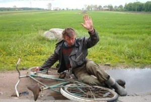
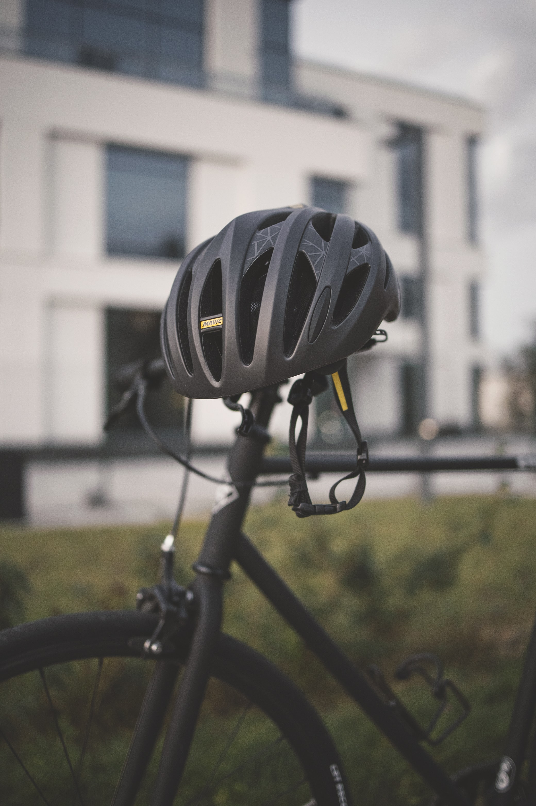

Велосипедисти – невигідна категорія суспільства. Вони не купують машин у кредит,
не витрачають час на пошук кращої ціни на запчастини, сервіс чи бензин. Вони майже не зазирають до аптек, бо
регулярні фізичні навантаження за кермом велосипеду помітно зміцнюють імунітет та запобігають хворобам.
Придбати велосипед варто й тим, хто й зараз почуває себе досить добре, але працює на одному й тому ж місці,
майже не піднімаючись з офісного крісла. Адже більшість не надто значних хвороб
зявляються саме через те, що ми рухаємся надто мало – від дивану до ліфту, від ліфту до машини чи зупинки
міської маршрутки, потім декілька хвилин до офісу. Ввечері ж усе навпаки.
В містах України з’являється дедалі більше велосипедистів, Ви мабуть помітили?! Отже, переваги
велосипеда перед машиною стають очевидні багатьом. Давайте роздивимось їх детально.
ВЕЛОСИПЕДИ - НА ЗАХИСТ ПРИРОДИ
Одна з найважливіших причин того, що велосипеди кращі за машини - вони більш
сприятливі до оточуючого середовища. Велосипеди не виділяють ані продуктів горіння, ані вуглекислого газу.
Вони не створюють такого шуму на дорогах, а отже, менше заважають птахам, тваринам і нам, людям.
Їзда на велосипеді - це екологічно чистий, безпечний і здоровий спосіб пересування з пункту А в пункт Б.
Використання
велосипеда безумовно сприяє дбайливому ставленню до навколишнього середовища та підтриманню здоров'я.
ФІЗИЧНІ ВПРАВИ
Скажіть чесно, які вправи Ви робите, сидячі в машині, як покращуєте свій фізичний стан? Керуючи
велосипедом, все відбувається само по собі. Ви тонізуєте м’язи, особливо ікри, стегна і сідниці, просто
крутячи педалі!
Фітнес – неодмінний плюс. До всього, це ще й весело.
Ви знаєте, що можете вмістити принаймні 10 велосипедів на одне паркувальне місце? Вам більше не доведеться
нарізати круги задля пошуку місця для своєї машини. Єдине – будьте пильні і не лишайте Ваш байк під
ненадійним замком.

СПІЛКУВАННЯ
Користування велосипедами веде до знайомства з новими людьми. Ви можете зупинятися по дорозі і
перемовлятись з людьми, що рідко вдається з вікна машини. У Вас є можливість приєднуватись до велоаматорів,
їздити разом у
походи і покатушки, приймати участь у велорухах і... знаходити нових друзів!
ТАК ШОЛОМАМ, НІ СТРАХУВАННЮ
Ви маєте бути у безпеці за кермом велосипеда, тож вдягайте шолома. Для машини Вам довелось би купувати
страховку. Велосипед потребує лише справних ліхтариків, набір інструментів і шолом.

ВОНИ ДЕШЕВШІ
Велосипеди набагато дешевші за машини. Навіть найкрутіші і за сьогоднішнім курсом долару, вони все одно
коштують в рази
нижче за автомобілі.
ЕКОНОМІЯ
Коли Ви крутите педалі, Вам немає чого перейматися про гроші на бензин. Взагалі ніколи. Заряджати енергією
потрібно лише своє тіло.
За даними ВОЗ
, безпечна інфраструктура для пішоходів і велосипедистів допоможе в зміцненні безпеки руху. Для міського
сектора найменш
розвинених країн, жителі яких не можуть дозволити собі приватні транспортні засоби, їзда на велосипеді стає
стійким видом транспорту використання якого допомагає в зниженні ризику:
серцевих захворювань
інсульту
деяких видів раку
діабету
Більш того, даний транспорт корисний не тільки для здоров'я, але і грає
важливу роль в скороченні фінансових витрат і забезпеченні соціальної справедливості.